Let’s start by loading the ritest package. I’ll also be using one or two outside packages in the examples that follow to demonstrate some additional functionality, but will hold off loading those for now.
The ritest() function supports a variety of arguments, but the basic syntax is
ritest(object, resampvar, reps=100, strata=NULL, cluster=NULL, ...)where:
-
objectis a model object (e.g. a linear regression). -
resampvaris the variable that you want to resample (i.e. permute). You can also specify the sharp null hypothesis that you want to test as part of a character string. -
repsis the number of simulations (i.e. permutations). -
stratais a variable defining the stratification (aka “blocking”) of the experimental design, if any. -
clusteris a variable defining the clustering of treatment in the experimental design, if any. -
...are other arguments. This includes the ability to set a random seed for reproducibility, controlling the parallelism behaviour, adding a progress bar, etc. See?ritestfor more information.
Let’s see this functionality in action with the help of some examples.
Example I: Toy data
Our first example will be a rather naive implementation using the base nkp dataset.
est = lm(yield ~ N + P + K, data = npk)Let’s say we’re interested in the yield effect of ‘N’ (i.e. nitrogen). We want to know whether our inferential reasoning about this parameter is robust to using RI, as opposed to just relying on the parametric t-test and p-value produced by our linear regression model. We’ll do 1,000 simulations and, just for illustration, limit the number of parallel cores to 2. (The default parallel behaviour will use half of the available cores on a user’s machine.) The ‘verbose = TRUE’ argument simply prints the results upon completion, including the original regression model summary.
est_ri = ritest(est, 'N', reps = 1e3, seed = 1234L, pcores = 2L, verbose = TRUE)
#>
#> Running 1000 parallel RI simulations as forked processes across 2 CPU cores.
#>
#> ******************
#> * ORIGINAL MODEL *
#> ******************
#>
#> Call:
#> lm(formula = yield ~ N + P + K, data = npk)
#>
#> Residuals:
#> Min 1Q Median 3Q Max
#> -9.2667 -3.6542 0.7083 3.4792 9.3333
#>
#> Coefficients:
#> Estimate Std. Error t value Pr(>|t|)
#> (Intercept) 54.650 2.205 24.784 <2e-16 ***
#> N1 5.617 2.205 2.547 0.0192 *
#> P1 -1.183 2.205 -0.537 0.5974
#> K1 -3.983 2.205 -1.806 0.0859 .
#> ---
#> Signif. codes: 0 '***' 0.001 '**' 0.01 '*' 0.05 '.' 0.1 ' ' 1
#>
#> Residual standard error: 5.401 on 20 degrees of freedom
#> Multiple R-squared: 0.3342, Adjusted R-squared: 0.2343
#> F-statistic: 3.346 on 3 and 20 DF, p-value: 0.0397
#>
#>
#> ******************
#> * RITEST RESULTS *
#> ******************
#>
#> Call: lm(formula = yield ~ N + P + K, data = npk)
#> Res. var(s): N1
#> H0: N1=0
#> Num. reps: 1000
#> ────────────────────────────────────────────────────────────────────────────────
#> T(obs) c n p=c/n SE(p) CI 2.5% CI 97.5%
#> 5.617 21 1000 0.021 0.007462 0.008726 0.03327
#> ────────────────────────────────────────────────────────────────────────────────
#> Note: Confidence interval is with respect to p=c/n.
#> Note: c = #{|T| >= |T(obs)|}In this simple case, our parametric results appear to hold up very well. The original p-value of 0.019 is very close to the equivalent rejection rate of 0.021 that we get with our RI procedure.
We can also visualize this result using the dedicated plot method. The function takes several arguments for added customization. But here I’ll just show the default plot, which includes vertical lines that denote the simulated (in this case: 95 percent) rejection regions.
plot(est_ri)
As an aside, note that the RI procedure tests against a standard two-sided null hypothesis of zero. (In the above case: H0: N1=0.) We can specify a different null hypothesis as part of the resampvar string. For example:

Note that we could (and probably should) have estimated a more realistic model that controls for the stratified (aka “blocked”) design of the original npk experiment. This is easily done, but we’ll hold off doing so for now since the the discussion of strata provides a nice segue to our next example.
Example II: Real-life data
Our second example will provide a more realistic use-case, where we need to account for a stratified and clustered research design. In particular, we’ll replicate a real-life experiment that David McKenzie describes in a very helpful blog post on the original Stata -ritest- routine.
The dataset in question derives from a randomized control trial about supply chains in Colombia, which David has kindly provided for re-use in this package (see: ?colombia). The key research question that we’re trying to answer below is whether a treatment intervention (b_treat) led to a drop in the number of days requiring visits to the Corabastos central market.1 Moreover, we want to know if our inference about this treatment effect is robust to RI.
Stata implementation
As a benchmark, first we recapitulate David’s Stata code and output. I won’t go into details — the essential thing to know is that I’m going to run 5,000 RI permutations on a pretty standard fixed-effect model, whilst accounting for the stratified and clustered design of the experiment.
(Aside: I’m also snipping most of the Stata output, so as to only highlight the main command and result.)
. // This next line assumes you have exported the `colombia` dataset from R as a
. // CSV for Stata to read, e.g. `write.csv(colombia, '~/colombia.csv', row.names = FALSE)`
. insheet using "~/colombia.csv", comma clear
.
. timer on 1
.
. ritest b_treat _b[b_treat], cluster(b_block) strata(b_pair) reps(5e3) seed(546): ///
> areg dayscorab b_treat b_dayscorab miss_b_dayscorab round2 round3, cluster(b_block) a(b_pair)
[snipped]
command: areg dayscorab b_treat b_dayscorab miss_b_dayscorab round2 round3, cluster(b_block)
a(b_pair)
_pm_1: _b[b_treat]
res. var(s): b_treat
Resampling: Permuting b_treat
Clust. var(s): b_block
Clusters: 63
Strata var(s): b_pair
Strata: 31
------------------------------------------------------------------------------
T | T(obs) c n p=c/n SE(p) [95% Conf. Interval]
-------------+----------------------------------------------------------------
_pm_1 | -.180738 529 5000 0.1058 0.0043 .0974064 .1146569
------------------------------------------------------------------------------
Note: Confidence interval is with respect to p=c/n.
Note: c = #{|T| >= |T(obs)|}
.
. timer off 1Like David, this takes around 3 minutes to run on my laptop.
R implementation
Let’s replicate the above in R using this package. First, we’ll estimate and save the parametric model using fixest::feols().
data("colombia")
library(fixest) ## For fast (high-dimensional) fixed-effects models
co_est =
feols(
dayscorab ~ b_treat + b_dayscorab + miss_b_dayscorab | b_pair + round2 + round3,
vcov = ~b_block, data = colombia
)
#> NOTE: 1,020 observations removed because of NA values (LHS: 1,020).
co_est
#> OLS estimation, Dep. Var.: dayscorab
#> Observations: 2,346
#> Fixed-effects: b_pair: 31, round2: 2, round3: 2
#> Standard-errors: Clustered (b_block)
#> Estimate Std. Error t value Pr(>|t|)
#> b_treat -0.180738 0.078174 -2.31201 0.024113 *
#> b_dayscorab 0.524761 0.029423 17.83478 < 2.2e-16 ***
#> miss_b_dayscorab 0.603928 0.264174 2.28610 0.025678 *
#> ---
#> Signif. codes: 0 '***' 0.001 '**' 0.01 '*' 0.05 '.' 0.1 ' ' 1
#> RMSE: 1.91167 Adj. R2: 0.282038
#> Within R2: 0.266002Now, we conduct RI on our model to see whether our key treatment variable (b_treat) is sensitive to the imposed parametric constraints. Note that we can specify the strata and clusters as additional arguments to ritest().
tic = Sys.time() ## timer on
co_ri = ritest(co_est, 'b_treat', cluster='b_block', strata='b_pair', reps=5e3, seed=546L)
toc = Sys.time() - tic ## timer off
## Print the results
co_ri
#>
#> Call: feols(fml = dayscorab ~ b_treat + b_dayscorab + miss_b_dayscorab | b_pair + round2 + round3, data = colombia, vcov = ~b_block)
#> Res. var(s): b_treat
#> H0: b_treat=0
#> Strata var(s): b_pair
#> Strata: 31
#> Cluster var(s): b_block
#> Clusters: 63
#> Num. reps: 5000
#> ────────────────────────────────────────────────────────────────────────────────
#> T(obs) c n p=c/n SE(p) CI 2.5% CI 97.5%
#> -0.1807 520 5000 0.104 0.007102 0.09232 0.1157
#> ────────────────────────────────────────────────────────────────────────────────
#> Note: Confidence interval is with respect to p=c/n.
#> Note: c = #{|T| >= |T(obs)|}Using the same random seed in R and Stata is a bit of performance art. We won’t get exactly the same results across two different languages. But the important thing to note is that they are functionally equivalent (rejection probability of 0.106 vs 0.104). More importantly, we can see that our inference about the effectiveness of treatment in this study is indeed sensitive to RI. Our parametric p-value (0.024) is much lower than the permuted rejection rate (0.104).
Again, we can plot the results. Here’s a slight variation, where we plot in histogram form and use a fill to highlight the 95% rejection region(s) instead of vertical lines.
plot(co_ri, type = 'hist', highlight = 'fill')
Benchmarks
One nice feature of the R implementation is that it should complete very quickly. Instead of taking 3 minutes, this time the 5,000 simulations only take around 6 seconds.
toc
#> Time difference of 6.581697 secsAs a general observation, the R implementation of ritest() doesn’t yet offer all of the functionality of the Stata version. For example, it doesn’t support an external file of resampling weights. However, it does appear to be a lot (25x – 50x) faster and this might make it more suitable for certain types of problems.
Extras and asides
Regression tables
Support for regression tables is enabled via ritest’s compatability with the modelsummary package. I recommend displaying p-values instead of the default standard errors. This is particularly important when comparing against a parametric model, as I do below.
library(modelsummary)
msummary(list(lm = co_est, ritest = co_ri),
statistic = 'p.value',
## These next arguments just make our comparison table look a bit nicer
coef_map = c('b_treat' = 'Treatment'),
gof_omit = 'Obs|R2|IC|Log|F',
notes = 'p-values shown in parentheses.')| lm | ritest | |
|---|---|---|
| Treatment | −0.181 | −0.181 |
| (0.024) | (0.104) | |
| Std.Errors | by: b_block | |
| H0 | b_treat=0 | |
| Num.Reps | 5000 | |
| Strata | b_pair | |
| Clusters | b_block | |
| p-values shown in parentheses. |
Formulas
Formula interfaces are supported if you don’t like writing variables (i.e. the resampvar and/or strata and cluster arguments) as strings. I’ll just use the default number of reps (i.e. 100) and drop the random seed for this next example.
ritest(co_est, ~b_treat, strata=~b_pair, cluster=~b_block)
#>
#> Call: feols(fml = dayscorab ~ b_treat + b_dayscorab + miss_b_dayscorab | b_pair + round2 + round3, data = colombia, vcov = ~b_block)
#> Res. var(s): b_treat
#> H0: b_treat=0
#> Strata var(s): b_pair
#> Strata: 31
#> Cluster var(s): b_block
#> Clusters: 63
#> Num. reps: 100
#> ────────────────────────────────────────────────────────────────────────────────
#> T(obs) c n p=c/n SE(p) CI 2.5% CI 97.5%
#> -0.1807 8 100 0.08 0.04485 0.006231 0.1538
#> ────────────────────────────────────────────────────────────────────────────────
#> Note: Confidence interval is with respect to p=c/n.
#> Note: c = #{|T| >= |T(obs)|}ggplot2
If you don’t like the default plot method and would prefer to use ggplot2, then that’s easily done. Just extract the beta values from the return object.
library(ggplot2)
ggplot(data.frame(betas = co_ri$betas), aes(betas)) +
geom_density() +
theme_minimal()
Piping workflows
The ritest package is fully compatible with piping workflows. This might be useful if you don’t feel like saving intermediate objects. Here I’ll demonstrate using the new base R pipe (|>) that was introduced in R 4.1.0, but the same principal would carry over to popular magrittr pipe (%>%).
## Only run this code if you have R 4.1 or above
if (getRversion() >= "4.1") {
feols(yield ~ N + P + K | block, vcov = 'iid', data = npk) |>
ritest('N', strata = 'block', reps = 1e3, seed = 99L) |>
plot()
}
Repeated visits to the market are an expensive and time-consuming exercise for the fresh produce vendors that formed the study population.↩︎